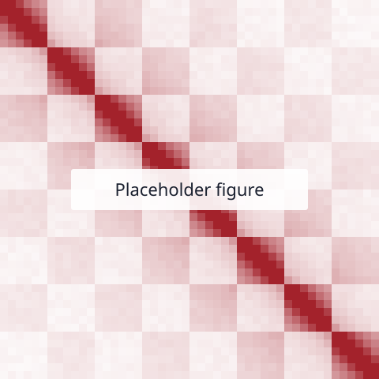

Research
Overview paragraph (3–5 sentences). State the big question, the approach you take, and what is distinctive about it. This is the paragraph a hiring committee reads.
Project or theme 1
What the problem is, what you did, and what you found. Keep it to one paragraph. Link the paper at the end.

Related: Paper short title, Journal Year
Project or theme 2
Same structure as above. A current or upcoming project can go here without results, framed as the question you are working on.
Methods and tools
Optional. A short list of the methods and software you use or develop, with links to code repositories.